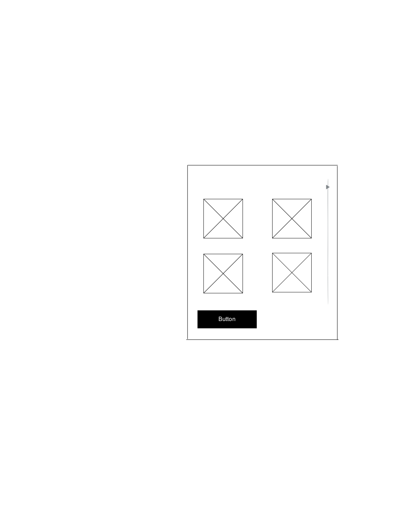
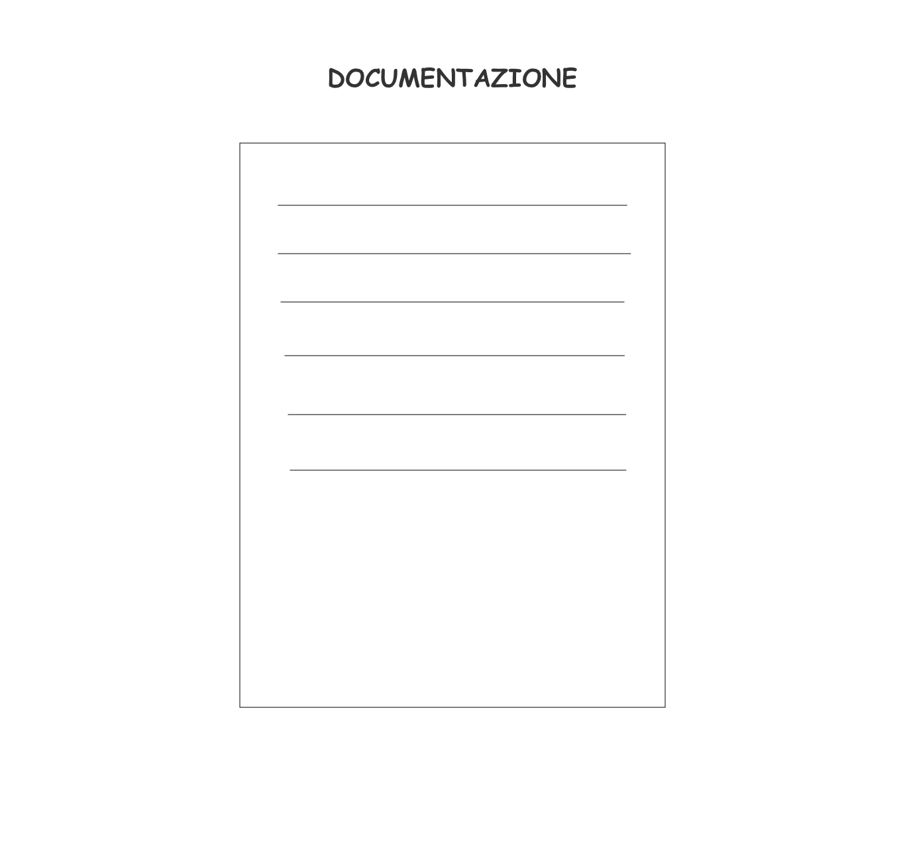
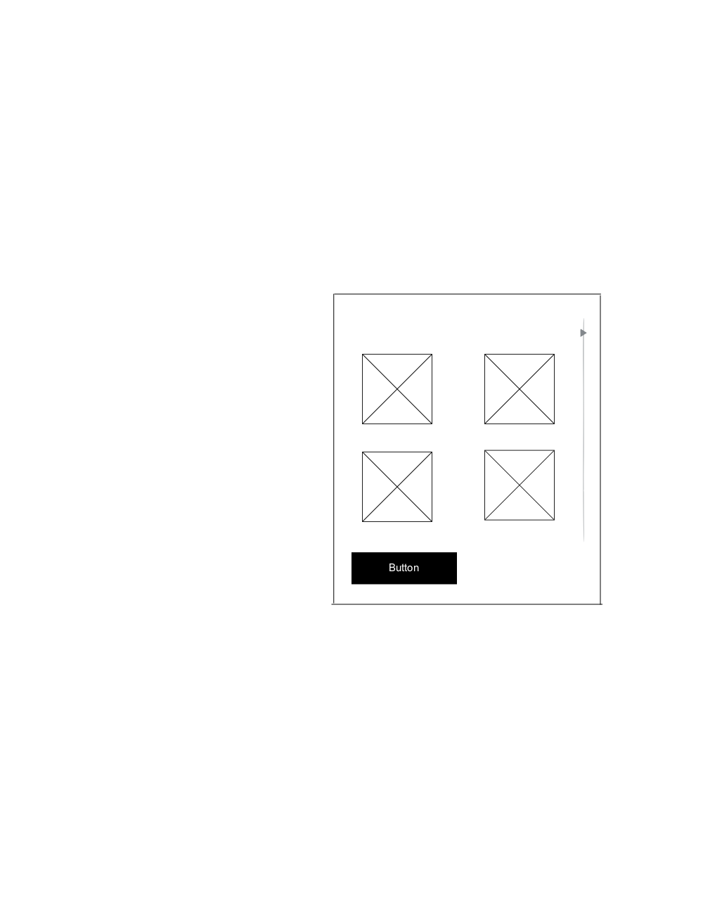
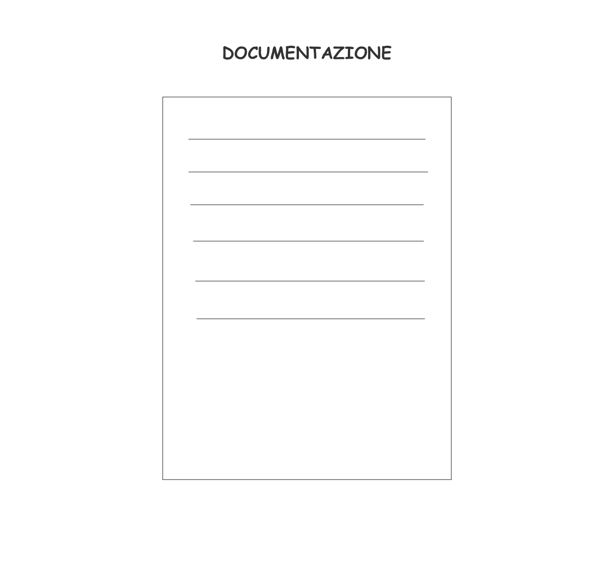

DOCUMENTAZIONE
ABSTRACT
Il sito web “Pinguini by night” intende aiutare giovani e adulti (16-60) che non hanno tempo per cercare informazioni su come raggiungere il proprio concerto (in particolare i Pinguini Tattici Nucleari), dando loro delle informazioni utili per pensare solo a divertirsi! Lo scopo è quello di inserire dei trasporti che partano dalle maggiori città italiane per raggiungere facilmente le destinazioni, senza perdere tempo ad andare in agenzia dei viaggi a prenotare i biglietti o passare delle ore su internet a cercare quello che fa al caso vostro. Sul sito troverete tutti i modi possibili per raggiungere la vostra destinazione.
BENCHMARKING
* Obiettivi: aiutare giovani e adulti a risparmiare tempo per cercare le informazioni utili per raggiungere il luogo del concerto e per conoscere le curiosità nascoste della band. Per facilitare ulteriormente la ricerca, ci limitiamo a creare un sito su Internet e non un’applicazione da scaricare sul telefono, che renderebbe i passaggi ancora più lunghi.
* Target: il sito è progettato per un range abbastanza ampio, costituito dalla fascia d’età compresa tra i 16 e i 60 anni, fatta eccezione per qualche caso sporadico.
* Competitors: l’applicazione più simile a cui si può associare Pinguini by night è quella di Jova Beach party, al cui interno dà molte informazioni riguardo il merchandising, le guests e tanto altro. Il nostro sito, invece, non ha bisogno di essere scaricato sul telefono, ma basta cercarlo su internet e ha scopi mirati (si presenta il giorno del concerto e come arrivarci). Gli altri possibili competitors sono due: livenation è un sito dedicato agli eventi e più nello specifico, quelli che terrà Harry Styles. È un sito molto generico, in cui non si specificano i trasporti ma solamnete le date del tour e la via precisa del luogo; l'altro sito, chiamato rockol somiglia molto a questo, infatti, si presentano le date del tour dei Maneskin ma, anche in questo caso, è una pagina dedicata solo a mostrare le date degli eventi
STRUTTURA E LAYOUT
Architettura : organizzazione ad albero
Wireframe:
 



Look and feel: il font utilizzato è l’Arial, della famiglia dei sans-serif perché rende le linee pulite e di più facile comprensione, grazie all’assenza delle grazie. I colori maggiormente utilizzati sono le varie intonazioni del Beige, che essendo un colore tenue, trasmette senso di rilassatezza, così come quando ascolti le canzoni dei Pinguini Tattici Nucleari. Per questo abbiamo richiamato lo stesso colore anche nel logo. Per le parole abbiamo utilizzato il colore nero in modo tale che potesse far risaltare le parole, senza affaticare la lettura.
LINGUAGGI E STRUMENTI
- Linguaggi: html, css
- Strumenti: canva
- Heroicons: per le icone
- Justinmind: per la creazione del wireframe
- Github: Pubblicazione
- Instagram: promozione
- Sito creato da zero
COMUNICATION STRATEGY
Background: la realizzazione di questo sito ha preso spunto da un’applicazione già esistente di Jova Beach Party (concerto che è stato fatto da Jovanotti l’anno scorso nelle maggiori spiagge italiane), ma a differenza di quello, il nostro è un sito molto più diretto che dà informazioni specifiche sulla band e sulle loro curiosità principali, sulle varie date del tour e su come raggiungerle. Infatti, per ogni data, sono previsti 4 punti di partenza, ovvero 4 città conosciute di Italia, da cui partire con vari mezzi a disposizione (come Flixbus, treni, aerei o in bicicletta per chi abita vicino alle destinazioni), inclusi anche gli orari consigliati, sulla base dei prezzi e del tempo a disposizione per visitare la città prima del concerto, soprattutto per chi viene da lontano e vuole sgranchire le gambe dopo tante ore di viaggio.
Obiettivi comunicativi/ target audience e messaggio: l’obiettivo del sito è quello di aiutare le persone che vogliono godersi il concerto senza pensare alla parte prima, che prevede, per esempio, come raggiungere il luogo. È per questo che il sito è dedicato a un range abbastanza ampio (16-60), perché si rivolge non solo agli adulti che non voglio prendere la macchina per fare tante ore di strada o pagare tanti soldi per il parcheggio, ma anche ai ragazzi che la macchina non ce l’hanno, per dare un modo comodo per arrivare, senza disturbare i genitori. Quante volte i nostri genitori hanno dovuto fare de chilometri di strada per venirci a prendere? In questo modo, il problema sarebbe risolto: i genitori sono tranquilli perché i ragazzi sono nelle mani di un autista e gli adulti non hanno il problema dei colpi di sonno post-concerto per tornare a casa. In particolare, ci siamo preposti di raggiungere:
- 30 likes al post di Instagram
- 30 followers alla pagina di instagram
- 10 commenti sotto al post indicando la canzone preferita dei Pinguini Tattici Nucleari
Promozione: la promozione del sito verrà fatta tramite la pagina Instagram “pinguinibynight”, inviando il link su Wathsapp ai conoscenti e creando una pagina Instagram dedicata al sito web.
VALUTAZIONE DEI RISULTATI:
Gli obiettivi sono stati raggiunti